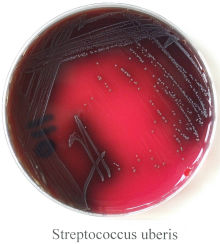
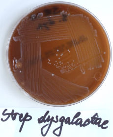
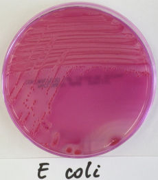
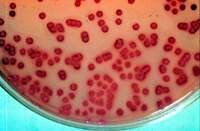
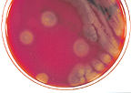

Environmental Mastitis
Streptococcus uberis
Streptococcus uberis is the most common cause of environmental intramammary infection under NZ spring conditions. Approximately 60% of intramammary infections become clinical mastitis. It can often cause a mastitis problem on well-managed dairies which employ post-milking teat disinfection, milking hygiene and routine maintenance of milking equipment and sometimes despite dry cow antibiotic treatment.
Those organisms are found in the intestine, pharynx, vulva and udder of the cow. Faeces is the most important source of environmental contamination. Strep. uberis is common in the environment. The incidence is highest at the beginning of lactation or late dry period. Horizontal transmission has been demonstrated overseas but it is not yet confirmed in New Zealand. Some chronic infections may occur. Some strains can invade the mammary epithelial cells. Environmental survival depends on moisture and is inversely related to temperature and UV levels.
Laboratory diagnosis
- Gram positive cocci in short chains
- Catalase negative
- 15% CAMP positive
- Blood agar - small 1-2mm translucent colonies with zones of green pseudo haemolysis around colonies.
Treatment
Usually sensitive to penicillin. Streptomycin resistant.
Lactational therapy is 70-80% successful. Cure rates can be high when detected and treated immediately versus after a delay of one week. The bacteriological cure rate can be higher if the antibiotic treatment is extended from three to six days.
Dry Cow Therapy is 80-90% successful. Failure to use dry-cow therapy allows infection during the early dry period.
Streptococcus uberis
Photo Kiro R Petrovski, 2008

Streptococcus dysgalactiae
Strep. dysgalactiae has characteristics of environmental and contagious organisms. Infection is often associated with teat lesions and faulty milking equipment or milking technique. It can cause clinical (90%) or sub clinical mastitis.
It is found in the intestine, lips, tonsils, vulva and udder of the cow. Faeces is the most important source of environmental contamination. This organism can live in the environment for prolonged periods.
Laboratory diagnosis
- Gram positive cocci in short chains
- Blood agar - small 1-2 mm moist convex colonies with greenish haemolysis.
- 20% aesculin positive
- CAMP negative
- Lancefield group C
Treatment
- Beta-lactam sensitive
- Lactational therapy – more than 90% success
- Dry cow therapy – virtually all infections are cured (~98%)
Streptococcus dysgalactiae
Photo Kiro R Petrovski, 2008

Coliform Mastitis
Coliform mastitis is caused by gram-negative environmental pathogens. Transient peracute or acute mastitis is the most common feature of pathogenic coliforms. Coliform mastitis is familiar to cattle veterinarians due the associated high mortality. It can cause outbreaks resulting in serious economic loss. The incidence of coliform mastitis can increase subsequent to the introduction of control measures for contagious mastitis. Coliform mastitis is highly associated with housed cattle and thus, it is uncommon under New Zealand conditions.
Lactose-fermenting Gram-negative rods such as E. coli, Klebsiella sp, Enterobacter sp and Citrobacter sp are the causes of coliform mastitis. Coliforms are environmental pollution organisms andthe most common isolates are E. coli and Klebsiella sp.
Contamination of the skin of the udder and teats occurs primarily between milkings, rather than at the time of the milking.
Recently calved cows are at increased risk for coliform mastitis and cows in herds with low somatic cells counts have the highest incidence of clinical coliform mastitis within the first 30 days of lactation.
Laboratory diagnosis
Escherichia coli
- Gram negative rods, oxidase negative.
- Blood agar- grey colonies may be haemolytic or non-haemolytic.
- MacConkey agar- lactose fermenter, forming pink colonies.
Klebsiella sp.
- Gram negative, large non motile rods, oxidase negative, citrate positive.
- Blood agar- large, greyish, mucoid colonies.
- McConkey agar- lactose fermenter, forming pink colonies.
Enterobacter Spp.
- Gram negative motile rods, oxidase negative, citrate positive.
- Blood agar- large dry colonies.
- McConkey agar- lactose fermenter, forming pink colonies.
Treatment
It is impossible to recommend a single protocol for treatment of coliform mastitis in dairy cattle. Economic factors, the severity of disease in each cow, availability of approved drugs and past experience of the veterinarian will dictate much of what is done for each patient. Frequent and complete milk-out is part of the most effective therapy. Broad-spectrum antimicrobials systemically or locally administered, fluid and electrolyte replacement therapy, frequent stripping-out of the gland, with or without oxytocin’s aid and antiinflammatory drugs are used, with varying degrees of success.
Bacteriostatic antibiotics are recommended because they cause less endotoxin release.
Most studies suggest that antimicrobials may not be a necessary component of treatment, but they are counterbalanced by observations that few cows spontaneously self-cure and some cows die from coliform mastitis. Antimicrobials should be considered as adjunctive therapy for coliform mastitis to ensure complete elimination of the infection, preventing chronic infection and the rare possibility of septicaemia. Coliforms are not susceptible to the usual intramammary antimicrobials. The intramammary infusion of antimicrobials into an affected gland is relatively unproductive due to products of inflammation occluding the lactiferous ducts.
Supportive treatments required e.g. fluids, NSAID’s.
Fluid therapy is indicated whenever dehydration is obvious or when appetite or water consumption is severely depressed by toxaemia from the disease. Balanced electrolyte solutions such as lactated Ringer's are the best choice (although not necessarily the most economic), but severely affected cattle that show signs of shock may require replacement bicarbonate therapy as well. Calcium should be administered to all multiparous cows that develop coliform mastitis because of the likelihood of clinical or subclinical hypocalcemia. For a mature cow of 400 kg a total of 40-60 litres of fluid are indicated over a period of 24 hours. In the first 4-6 hours 20-30 litres should be given.
Non-steroidal anti-inflammatory drugs are employed to block the prostaglandin-mediated inflammation associated with lipopolysaccharide endotoxemia. Flunixin meglumine is the most potent of these drugs. Other NSAIDs may be used such as aspirin, butazolidin, meloxicam, ketoprofen, carprofen, toflenamic acid, etc. The earlier in the disease these drugs are administered, the more likely they are to help.
Prognosis. The prognosis in peracute coliform mastitis is grave if severe toxaemia is present. The successful treatment of peracute disease requires the earliest possible action and regular clinical surveillance until recovery.
Escherichia coli
Photo Kiro R Petrovski, 2008

Klebsiella

Pseudomonas Sp.
These can cause acute or chronic mastitis and are ubiquitous in the environment. Pseudomonas aeruginosa is a species that has been associated with significant mastitis problems in certain herds. The organisms are often found in contaminated water pipelines/wash hoses, damp bedding or on equipment. Water tanks, hoses, and especially connecting devices should be suspected of harbouring Pseudomonas sp. Pseudomonas may also come from contaminated teat disinfectants (chlorhexidine and Quarternary ammonia) or be introduced into the gland via poor administration of antimicrobial infusions.
This is not a common problem in NZ.
Laboratory diagnosis
- Gram-negative rods
- Blood agar- large rough translucent colonies with serrated edges, a fluorescent appearance and sweet odour. Haemolytic or non-haemolytic. Green pigment.
- MacConkey agar- non lactose fermenter, pale irregular shaped colonies. Green pigment.
Treatment
- Resistant to many antibiotics.
- Most of the infected cows must be culled.

Miscellaneous causes of mastitis
Mastitis can be caused by other bacteria, mycoplasma, fungi, yeasts and algae. Viruses have also been implicated, but there is no hard evidence that they are primary causes of mastitis.
GO BACK TO THE microbiology PAGE